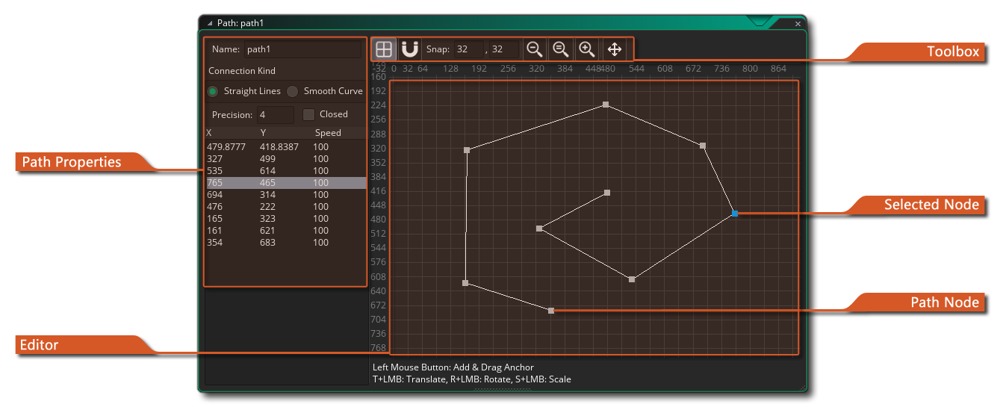
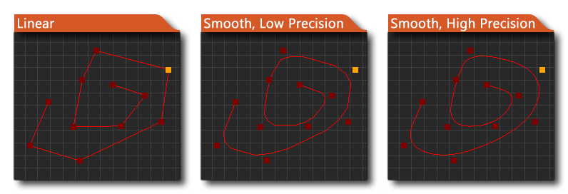

 En algún momento mientras crea sus juegos, puede necesitar que una de sus instancias siga un camino a través de un nivel. Ahora, esto se puede hacer en código simplemente creando una matriz de posiciones dentro de la sala y luego haciendo que una instancia se mueva entre ellas, pero eso puede ser una tarea difícil de configurar y es difícil de cambiar, probar y adaptar para diferentes instancias. Por esta razón, GameMaker Studio 2 tiene recursos de ruta y un editor de ruta dedicado.
La idea básica es bastante simple: define una ruta dibujándola en el editor de ruta, luego puede colocar una acción (o código) en el evento de creación de un objeto para decirle a la instancia que siga esa ruta en particular. También puede configurar la velocidad para seguir la ruta y una serie de otras acciones relacionadas con la posición y la orientación de la ruta dentro de la sala. Cuando crea un recurso de ruta por primera vez, la ventana del editor de ruta se abrirá con las siguientes opciones:
Al igual que con todos los recursos en GameMaker Studio 2, debe darle a su nueva ruta un nombre único, ya que esto es lo que se usará para identificarlo en todo el juego que está haciendo, y un buen sistema que mucha gente usa es el prefijo (o sufijo) ) el recurso para reconocimiento fácil en código o acciones (por ejemplo: path_Enemy_1 o PowerUp_path ) Una vez que haya nombrado la ruta, puede comenzar a definirla colocando puntos en el editor principal a la derecha, con cada punto agregado a la lista aquí junto con su posición y velocidad.
Puede editar cada valor en las propiedades de ruta haciendo doble clic
en él y entrar un valor. El valor de velocidad para los puntos de ruta se define por un porcentaje de la velocidad a la que hace que la instancia se mueva a lo largo de la ruta (el valor predeterminado es 100%). Entonces, si inicia una instancia a una velocidad de 2 (2 píxeles por paso) a lo largo de una ruta y luego uno de los puntos de ruta tiene un valor de velocidad del 50%, la instancia reducirá la velocidad a medida que se aproxima a una velocidad de 1 (50% de la velocidad de ruta). Igualmente, puede establecer la velocidad al 150% y la instancia se acelerará a medida que alcanza el punto. De esta forma, puedes crear un bonito movimiento de aspecto dinámico sin ningún tipo de código.
También puede especificar el tipo de conexión para toda la ruta y si la ruta debe cerrarse o no (una ruta cerrada conectará el último punto de la ruta con la primera). El tipo de conexión puede ser de línea recta o suave donde una línea recta conecta simplemente conecta los puntos de una ruta en forma lineal, con cambios angulares en cada punto, mientras que una conexión suave creará una ruta mucho más suave que puede no pasar directamente a través de cualquiera de los puntos, sino más bien tomar una línea aproximada, creando bonitas curvas. También puede especificar la precisión de las curvas (por defecto es 4) que puede ser de 1 a 8, siendo 8 el más suave. La imagen a continuación muestra un ejemplo de cómo estas opciones afectan la ruta: 
Puede agregar puntos al clic de la ruta
/
y clic izquierdo
para eliminar el punto o los puntos seleccionados también.
Hay un menú adicional disponible para usted en la ventana del editor cuando hace clic derecho, que se muestra a continuación:
Cada uno de los elementos en este menú funciona de la siguiente manera:
- Editar puntos: edite los puntos de ruta.
- Panorámica a la ruta: desplaza la vista en el editor al centro de la ruta.
- Invertir - Invierta el orden de los puntos de ruta. Esto no los mueve, sino que cambia el orden en que serán procesados para que el inicio sea el final y viceversa.
- Voltear: gira el camino a lo largo del eje horizontal.
- Minrror: abre el camino a lo largo del eje vertical.
- Eliminar puntos: elimine el punto o puntos seleccionados.
Los botones del cuadro de herramientas en la parte superior permiten controlar cómo se dibujan las cosas en la ventana del editor. Puede activar o desactivar la cuadrícula de fondo, así como establecer la adición de puntos de ruta para que se ajusten a esta cuadrícula o no. Los valores de ajuste indican el tamaño de las celdas de la grilla y esto se puede cambiar a cualquier valor que requiera. El resto de las herramientas están dedicadas a hacer zoom y panoramizar el área del editor, y puede hacer clic en el botón (=) para restablecer a 1: 1 con la pantalla. Tenga en cuenta que si se desplaza demasiado lejos de donde desea dibujar la ruta, puede usar el menú del botón derecho del mouse y luego hacer clic en desplazarse a la ruta para desplazarse nuevamente hacia donde estaba trabajando.
Los caminos son simplemente una colección de puntos unidos por una línea. En el editor, coloca estos puntos usando el botón izquierdo del mouse. Puede agregar puntos en cualquier lugar del editor de sala y se agregarán a la lista de puntos consecutivamente para crear una ruta. Si coloca un punto cerca de una línea de conexión u otro nodo, el nuevo punto se insertará en la ruta en lugar de agregarse a ella (puede establecer la distancia de detección para esto en las Preferencias ). Puedes presionar
y seleccione "Eliminar punto" o presione
Tenga en cuenta que también puede usar los siguientes accesos directos para realizar algunas operaciones adicionales que no están disponibles a través del menú del botón derecho del mouse en los puntos de ruta seleccionados:
- T +
- R +
- S +